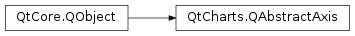

QtCharts.QAbstractAxis¶
Inherited by: QtCharts.QValueAxis, QtCharts.QCategoryAxis, QtCharts.QLogValueAxis, QtCharts.QBarCategoryAxis, QtCharts.QDateTimeAxis
Note
This class was introduced in Qt 5.7.
Synopsis¶
Functions¶
- def
alignment() - def
gridLineColor() - def
gridLinePen() - def
hide() - def
isGridLineVisible() - def
isLineVisible() - def
isMinorGridLineVisible() - def
isReverse() - def
isTitleVisible() - def
isVisible() - def
labelsAngle() - def
labelsBrush() - def
labelsColor() - def
labelsFont() - def
labelsVisible() - def
linePen() - def
linePenColor() - def
minorGridLineColor() - def
minorGridLinePen() - def
orientation() - def
setGridLineColor(color) - def
setGridLinePen(pen) - def
setGridLineVisible([visible=true]) - def
setLabelsAngle(angle) - def
setLabelsBrush(brush) - def
setLabelsColor(color) - def
setLabelsFont(font) - def
setLabelsVisible([visible=true]) - def
setLinePen(pen) - def
setLinePenColor(color) - def
setLineVisible([visible=true]) - def
setMax(max) - def
setMin(min) - def
setMinorGridLineColor(color) - def
setMinorGridLinePen(pen) - def
setMinorGridLineVisible([visible=true]) - def
setRange(min, max) - def
setReverse([reverse=true]) - def
setShadesBorderColor(color) - def
setShadesBrush(brush) - def
setShadesColor(color) - def
setShadesPen(pen) - def
setShadesVisible([visible=true]) - def
setTitleBrush(brush) - def
setTitleFont(font) - def
setTitleText(title) - def
setTitleVisible([visible=true]) - def
setVisible([visible=true]) - def
shadesBorderColor() - def
shadesBrush() - def
shadesColor() - def
shadesPen() - def
shadesVisible() - def
show() - def
titleBrush() - def
titleFont() - def
titleText()
Signals¶
- def
colorChanged(color) - def
gridLineColorChanged(color) - def
gridLinePenChanged(pen) - def
gridVisibleChanged(visible) - def
labelsAngleChanged(angle) - def
labelsBrushChanged(brush) - def
labelsColorChanged(color) - def
labelsFontChanged(pen) - def
labelsVisibleChanged(visible) - def
linePenChanged(pen) - def
lineVisibleChanged(visible) - def
minorGridLineColorChanged(color) - def
minorGridLinePenChanged(pen) - def
minorGridVisibleChanged(visible) - def
reverseChanged(reverse) - def
shadesBorderColorChanged(color) - def
shadesBrushChanged(brush) - def
shadesColorChanged(color) - def
shadesPenChanged(pen) - def
shadesVisibleChanged(visible) - def
titleBrushChanged(brush) - def
titleFontChanged(font) - def
titleTextChanged(title) - def
titleVisibleChanged(visible) - def
visibleChanged(visible)
Detailed Description¶
-
PySide2.QtCharts.QtCharts.QAbstractAxis.AxisType¶
-
PySide2.QtCharts.QtCharts.QAbstractAxis.alignment()¶ Return type: PySide2.QtCore.Qt.Alignment
-
PySide2.QtCharts.QtCharts.QAbstractAxis.colorChanged(color)¶ Parameters: color – PySide2.QtGui.QColor
-
PySide2.QtCharts.QtCharts.QAbstractAxis.gridLineColor()¶ Return type: PySide2.QtGui.QColor
-
PySide2.QtCharts.QtCharts.QAbstractAxis.gridLineColorChanged(color)¶ Parameters: color – PySide2.QtGui.QColor
-
PySide2.QtCharts.QtCharts.QAbstractAxis.gridLinePen()¶ Return type: PySide2.QtGui.QPen
-
PySide2.QtCharts.QtCharts.QAbstractAxis.gridLinePenChanged(pen)¶ Parameters: pen – PySide2.QtGui.QPen
-
PySide2.QtCharts.QtCharts.QAbstractAxis.gridVisibleChanged(visible)¶ Parameters: visible – PySide2.QtCore.bool
-
PySide2.QtCharts.QtCharts.QAbstractAxis.hide()¶
-
PySide2.QtCharts.QtCharts.QAbstractAxis.isGridLineVisible()¶ Return type: PySide2.QtCore.bool
-
PySide2.QtCharts.QtCharts.QAbstractAxis.isLineVisible()¶ Return type: PySide2.QtCore.bool
-
PySide2.QtCharts.QtCharts.QAbstractAxis.isMinorGridLineVisible()¶ Return type: PySide2.QtCore.bool
-
PySide2.QtCharts.QtCharts.QAbstractAxis.isReverse()¶ Return type: PySide2.QtCore.bool
-
PySide2.QtCharts.QtCharts.QAbstractAxis.isTitleVisible()¶ Return type: PySide2.QtCore.bool
-
PySide2.QtCharts.QtCharts.QAbstractAxis.isVisible()¶ Return type: PySide2.QtCore.bool
-
PySide2.QtCharts.QtCharts.QAbstractAxis.labelsAngle()¶ Return type: PySide2.QtCore.int
-
PySide2.QtCharts.QtCharts.QAbstractAxis.labelsAngleChanged(angle)¶ Parameters: angle – PySide2.QtCore.int
-
PySide2.QtCharts.QtCharts.QAbstractAxis.labelsBrush()¶ Return type: PySide2.QtGui.QBrush
-
PySide2.QtCharts.QtCharts.QAbstractAxis.labelsBrushChanged(brush)¶ Parameters: brush – PySide2.QtGui.QBrush
-
PySide2.QtCharts.QtCharts.QAbstractAxis.labelsColor()¶ Return type: PySide2.QtGui.QColor
-
PySide2.QtCharts.QtCharts.QAbstractAxis.labelsColorChanged(color)¶ Parameters: color – PySide2.QtGui.QColor
-
PySide2.QtCharts.QtCharts.QAbstractAxis.labelsFont()¶ Return type: PySide2.QtGui.QFont
-
PySide2.QtCharts.QtCharts.QAbstractAxis.labelsFontChanged(pen)¶ Parameters: pen – PySide2.QtGui.QFont
-
PySide2.QtCharts.QtCharts.QAbstractAxis.labelsVisible()¶ Return type: PySide2.QtCore.bool
-
PySide2.QtCharts.QtCharts.QAbstractAxis.labelsVisibleChanged(visible)¶ Parameters: visible – PySide2.QtCore.bool
-
PySide2.QtCharts.QtCharts.QAbstractAxis.linePen()¶ Return type: PySide2.QtGui.QPen
-
PySide2.QtCharts.QtCharts.QAbstractAxis.linePenChanged(pen)¶ Parameters: pen – PySide2.QtGui.QPen
-
PySide2.QtCharts.QtCharts.QAbstractAxis.linePenColor()¶ Return type: PySide2.QtGui.QColor
-
PySide2.QtCharts.QtCharts.QAbstractAxis.lineVisibleChanged(visible)¶ Parameters: visible – PySide2.QtCore.bool
-
PySide2.QtCharts.QtCharts.QAbstractAxis.minorGridLineColor()¶ Return type: PySide2.QtGui.QColor
-
PySide2.QtCharts.QtCharts.QAbstractAxis.minorGridLineColorChanged(color)¶ Parameters: color – PySide2.QtGui.QColor
-
PySide2.QtCharts.QtCharts.QAbstractAxis.minorGridLinePen()¶ Return type: PySide2.QtGui.QPen
-
PySide2.QtCharts.QtCharts.QAbstractAxis.minorGridLinePenChanged(pen)¶ Parameters: pen – PySide2.QtGui.QPen
-
PySide2.QtCharts.QtCharts.QAbstractAxis.minorGridVisibleChanged(visible)¶ Parameters: visible – PySide2.QtCore.bool
-
PySide2.QtCharts.QtCharts.QAbstractAxis.orientation()¶ Return type: PySide2.QtCore.Qt.Orientation
-
PySide2.QtCharts.QtCharts.QAbstractAxis.reverseChanged(reverse)¶ Parameters: reverse – PySide2.QtCore.bool
-
PySide2.QtCharts.QtCharts.QAbstractAxis.setGridLineColor(color)¶ Parameters: color – PySide2.QtGui.QColor
-
PySide2.QtCharts.QtCharts.QAbstractAxis.setGridLinePen(pen)¶ Parameters: pen – PySide2.QtGui.QPen
-
PySide2.QtCharts.QtCharts.QAbstractAxis.setGridLineVisible([visible=true])¶ Parameters: visible – PySide2.QtCore.bool
-
PySide2.QtCharts.QtCharts.QAbstractAxis.setLabelsAngle(angle)¶ Parameters: angle – PySide2.QtCore.int
-
PySide2.QtCharts.QtCharts.QAbstractAxis.setLabelsBrush(brush)¶ Parameters: brush – PySide2.QtGui.QBrush
-
PySide2.QtCharts.QtCharts.QAbstractAxis.setLabelsColor(color)¶ Parameters: color – PySide2.QtGui.QColor
-
PySide2.QtCharts.QtCharts.QAbstractAxis.setLabelsFont(font)¶ Parameters: font – PySide2.QtGui.QFont
-
PySide2.QtCharts.QtCharts.QAbstractAxis.setLabelsVisible([visible=true])¶ Parameters: visible – PySide2.QtCore.bool
-
PySide2.QtCharts.QtCharts.QAbstractAxis.setLinePen(pen)¶ Parameters: pen – PySide2.QtGui.QPen
-
PySide2.QtCharts.QtCharts.QAbstractAxis.setLinePenColor(color)¶ Parameters: color – PySide2.QtGui.QColor
-
PySide2.QtCharts.QtCharts.QAbstractAxis.setLineVisible([visible=true])¶ Parameters: visible – PySide2.QtCore.bool
-
PySide2.QtCharts.QtCharts.QAbstractAxis.setMax(max)¶ Parameters: max – object
-
PySide2.QtCharts.QtCharts.QAbstractAxis.setMin(min)¶ Parameters: min – object
-
PySide2.QtCharts.QtCharts.QAbstractAxis.setMinorGridLineColor(color)¶ Parameters: color – PySide2.QtGui.QColor
-
PySide2.QtCharts.QtCharts.QAbstractAxis.setMinorGridLinePen(pen)¶ Parameters: pen – PySide2.QtGui.QPen
-
PySide2.QtCharts.QtCharts.QAbstractAxis.setMinorGridLineVisible([visible=true])¶ Parameters: visible – PySide2.QtCore.bool
-
PySide2.QtCharts.QtCharts.QAbstractAxis.setRange(min, max)¶ Parameters: - min – object
- max – object
-
PySide2.QtCharts.QtCharts.QAbstractAxis.setReverse([reverse=true])¶ Parameters: reverse – PySide2.QtCore.bool
-
PySide2.QtCharts.QtCharts.QAbstractAxis.setShadesBorderColor(color)¶ Parameters: color – PySide2.QtGui.QColor
-
PySide2.QtCharts.QtCharts.QAbstractAxis.setShadesBrush(brush)¶ Parameters: brush – PySide2.QtGui.QBrush
-
PySide2.QtCharts.QtCharts.QAbstractAxis.setShadesColor(color)¶ Parameters: color – PySide2.QtGui.QColor
-
PySide2.QtCharts.QtCharts.QAbstractAxis.setShadesPen(pen)¶ Parameters: pen – PySide2.QtGui.QPen
-
PySide2.QtCharts.QtCharts.QAbstractAxis.setShadesVisible([visible=true])¶ Parameters: visible – PySide2.QtCore.bool
-
PySide2.QtCharts.QtCharts.QAbstractAxis.setTitleBrush(brush)¶ Parameters: brush – PySide2.QtGui.QBrush
-
PySide2.QtCharts.QtCharts.QAbstractAxis.setTitleFont(font)¶ Parameters: font – PySide2.QtGui.QFont
-
PySide2.QtCharts.QtCharts.QAbstractAxis.setTitleText(title)¶ Parameters: title – unicode
-
PySide2.QtCharts.QtCharts.QAbstractAxis.setTitleVisible([visible=true])¶ Parameters: visible – PySide2.QtCore.bool
-
PySide2.QtCharts.QtCharts.QAbstractAxis.setVisible([visible=true])¶ Parameters: visible – PySide2.QtCore.bool
-
PySide2.QtCharts.QtCharts.QAbstractAxis.shadesBorderColor()¶ Return type: PySide2.QtGui.QColor
-
PySide2.QtCharts.QtCharts.QAbstractAxis.shadesBorderColorChanged(color)¶ Parameters: color – PySide2.QtGui.QColor
-
PySide2.QtCharts.QtCharts.QAbstractAxis.shadesBrush()¶ Return type: PySide2.QtGui.QBrush
-
PySide2.QtCharts.QtCharts.QAbstractAxis.shadesBrushChanged(brush)¶ Parameters: brush – PySide2.QtGui.QBrush
-
PySide2.QtCharts.QtCharts.QAbstractAxis.shadesColor()¶ Return type: PySide2.QtGui.QColor
-
PySide2.QtCharts.QtCharts.QAbstractAxis.shadesColorChanged(color)¶ Parameters: color – PySide2.QtGui.QColor
-
PySide2.QtCharts.QtCharts.QAbstractAxis.shadesPen()¶ Return type: PySide2.QtGui.QPen
-
PySide2.QtCharts.QtCharts.QAbstractAxis.shadesPenChanged(pen)¶ Parameters: pen – PySide2.QtGui.QPen
-
PySide2.QtCharts.QtCharts.QAbstractAxis.shadesVisible()¶ Return type: PySide2.QtCore.bool
-
PySide2.QtCharts.QtCharts.QAbstractAxis.shadesVisibleChanged(visible)¶ Parameters: visible – PySide2.QtCore.bool
-
PySide2.QtCharts.QtCharts.QAbstractAxis.show()¶
-
PySide2.QtCharts.QtCharts.QAbstractAxis.titleBrush()¶ Return type: PySide2.QtGui.QBrush
-
PySide2.QtCharts.QtCharts.QAbstractAxis.titleBrushChanged(brush)¶ Parameters: brush – PySide2.QtGui.QBrush
-
PySide2.QtCharts.QtCharts.QAbstractAxis.titleFont()¶ Return type: PySide2.QtGui.QFont
-
PySide2.QtCharts.QtCharts.QAbstractAxis.titleFontChanged(font)¶ Parameters: font – PySide2.QtGui.QFont
-
PySide2.QtCharts.QtCharts.QAbstractAxis.titleText()¶ Return type: unicode
-
PySide2.QtCharts.QtCharts.QAbstractAxis.titleTextChanged(title)¶ Parameters: title – unicode
-
PySide2.QtCharts.QtCharts.QAbstractAxis.titleVisibleChanged(visible)¶ Parameters: visible – PySide2.QtCore.bool
-
PySide2.QtCharts.QtCharts.QAbstractAxis.type()¶ Return type: PySide2.QtCharts.QtCharts::QAbstractAxis.AxisType
-
PySide2.QtCharts.QtCharts.QAbstractAxis.visibleChanged(visible)¶ Parameters: visible – PySide2.QtCore.bool
© 2018 The Qt Company Ltd. Documentation contributions included herein are the copyrights of their respective owners. The documentation provided herein is licensed under the terms of the GNU Free Documentation License version 1.3 as published by the Free Software Foundation. Qt and respective logos are trademarks of The Qt Company Ltd. in Finland and/or other countries worldwide. All other trademarks are property of their respective owners.